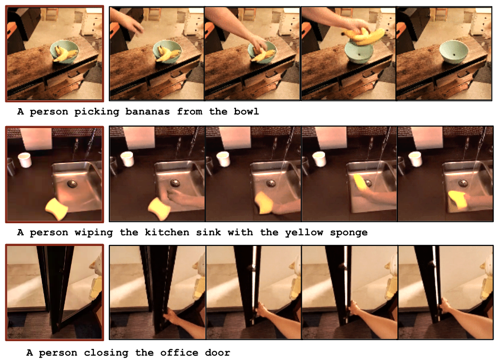
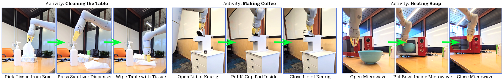

Gen2Act: Human Video Generation in Novel Scenarios enables Generalizable Robot Manipulation
1. Quick overview of the paper
| What should the paper solve? | Robot operation strategies are difficult to generalize to new object types, new action types, and unseen real scenes; directly expanding robot data collection is costly and unrealistic. The question the paper wants to solve is: Can the existing human operation motion knowledge of the web-scale video model be used to allow the robot to perform new tasks not covered in the training data under a small number of robot demonstrations? |
|---|---|
| The author's approach | Split the language condition operation into two steps: first use pre-trained VideoPoet to generate a video of "human completing the task" based on the first frame of the scene and language, and then train a closed-loop robot strategy $\pi_\theta(\mathbf{I}_{t-k: t}, \mathbf{V}_g)$ to translate the generated human video into robot actions. When training the policy, an additional point trajectory prediction auxiliary loss is added to allow the latent policy to explicitly absorb motion cues in the video. |
| most important results | Gen2Act achieved an average success rate of 60% in real mobile manipulator experiments, which is higher than RT1's 22%, RT1-GC's 26%, Vid2Robot's 37%, and 49% without track loss. Achieving 58% and 30% on the more difficult Object-Type Generalization and Motion-Type Generalization respectively, an absolute improvement of about 30 percentage points relative to the strongest baseline. |
| Things to note when reading | This paper does not ask the video model to generate robot videos, but to generate human videos; what is really evaluated is "whether motion cues in human videos can be reliably translated into robot actions by the policy." Focus on three things: whether the video generation error caused the failure, how much the point track auxiliary loss contributed, and whether the chain execution of long-term tasks is just the multiplication accumulation of the success rate of short tasks. |

2. Motivation and problem definition
2.1 Why go around to "human videos"
The author observed that the distribution of daily operation tasks is extremely wide: there are different objects, different backgrounds, and different movement patterns in offices, kitchens, and laboratories. Collecting robot data for every task is expensive. In contrast, human videos on the Internet contain a lot of motor knowledge of "how to operate objects", such as opening a microwave, pouring water, wiping the table, rotating objects, etc.
Existing video generation models are trained on massive web videos and can generate reasonable human operation videos from zero samples when given scene images and text tasks. The core assumption of Gen2Act is that although these human videos are not robot actions, they contain enough motion cues to serve as conditional input for the robot's strategy.
2.2 Formalization of tasks
Given the initial scene image $\mathbf{I}_0$ and the language target $\mathcal{G}$, the goal is to let the robot output the action sequence $\mathbf{a}_{1: H}$ to complete the task. Gen2Act breaks it down into:
Among them, $\mathcal{V}$ is a pre-trained video generation model, which outputs human operation video $\mathbf{V}_g$. Then the closed-loop strategy outputs the robot action:
Note that the strategy here is not to copy the video in open loop, but to also look at the latest $k$ frame robot observation at each step, so it can react to the real execution status.
2.3 Paper contribution
- It is proposed to rewrite the language-conditional robot operation as "zero-sample human video generation + human video to robot action translation".
- Without fine-tuning the video generation model, directly utilize VideoPoet's web-scale motion knowledge to reduce robot data collection requirements.
- It is proposed to add prediction auxiliary losses of generated-human-video tracks and robot-observation tracks to policy training to make latent tokens more motion-aware.
- The system evaluates mild, standard, object-type, motion-type four-level generalization on a real mobile manipulator, and demonstrates long-range task chain execution.
4. Detailed explanation of method
4.1 Overall architecture
Gen2Act has two phases. The first stage uses a video model to generate human videos, and the second stage uses a closed-loop strategy to translate the generated videos into robot actions. During training, the strategy not only clones behaviors, but also predicts point trajectories; during inference, the point trajectory prediction head is no longer used, and only the video condition strategy is retained.

4.2 Human Video Generation
The author uses VideoPoet for text+image conditioned video generation. The input is a scene image and task text, and the output is a video of a human completing the task. There are three key points in project selection:
- Not generating bot videos: Current video generation models are trained on human videos on the web, and generating robot videos from zero samples is unreliable; if fine-tuned for robot videos, the generalization of the web-scale model in new scenes may be sacrificed.
- Without fine-tuning VideoPoet: The paper directly uses the pre-trained model. The appendix says that VideoPoet is trained on more than 270M videos, so it has a wide range of daily operation priors.
- Automatic pairing during training: For each robot trajectory, the corresponding human video is generated using the first frame of the trajectory and language instructions to form $(\texttt{generated\_human\_video}, \texttt{robot\_demo})$ pairing data.
The form of prompt given in the appendix is very simple: A person task-name, static camera. For example, when turning on the microwave, enter A person opening the microwave, static camera. The author also emphasizes that the robot arm should try not to block the scene in the first frame, so the robot will return to a fixed reset pose before each task.

4.3 Generated Human Video to Robot Action Translation
The translation strategy inputs two parts: the generated human video $\mathbf{V}_g$ and the recent $k$ frame robot observation $\mathbf{I}_{t-k: t}$. Both first extract visual features through ViT encoder $\chi$:
Since the number of video tokens is large and the time is not regular enough, the author uses Perceiver-Resampler style Transformer encoders $\Phi_g, \Phi_r$ to compress them into a fixed number of tokens:
Appendix supplement: Both the generated video token and the robot observation token use 2-layer Perceiver-Resampler; the generated video is fixedly sampled at 16 frames, and is guaranteed to include the first and last frames; the robot history uses the last 8 frames; all images are resized to $224\times224$.
4.4 Point Track Prediction auxiliary loss
Gen2Act not only treats the generated video as visual features, but also expects latent tokens to encode "how the points move". The author uses off-the-shelf trackers such as TAPIR / BootsTAP to extract random point trajectories $\tau_g$ from the generated video and $\tau_r$ from the robot observation video.
For the generated video, given the first frame point $P^0$, the first frame feature $i_g^0$ and the video tokens $z_g$, the track prediction transformer $\psi_g$ predicts the trajectory:
The observation side of the robot is similar, except that the input is the chunk start time $P^{t-k}$, $i_{t-k}$ and observation tokens $z_r$. Appendix description: The track prediction transformer has 6 self-attention layers and 8 heads.
4.5 Behavior Cloning action prediction
The action space is discretized with 256 bins per action dimension, and action values are evenly bucketed within the upper and lower bounds of each dimension. The strategy predicts the future action $\hat a_{t: t+h}$, and uses the cross-entropy and ground-truth actions $a_{t: t+h}$ to make behavioral clones. The action is end-effector space, and it also predicts whether the episode will terminate and the gripper will open and close.
The overall training goal can be understood as:
The paper does not emphasize the specific $\lambda_\tau$ value, but clearly states that track prediction is only used for training and does not increase the calculation during testing.
4.6 Deployment and long-range task chain execution
Single-task deployment: the robot sees the current scene image, the user gives a language task, VideoPoet generates a human video, and the closed-loop strategy continuously outputs actions based on the video and the robot's recent observations.
Long-term task deployment: First use Gemini to decompose the activity into several sub-tasks, for example, "Making Coffee" is divided into opening the lid, putting in the K-Cup, and closing the lid. Each time a subtask is completed, the last frame after the execution of the previous robot is used as the first frame of the next video generation, instead of generating all subtask videos at once from the initial picture. The appendix says that VideoPoet takes less than 10 seconds to generate the first subsequent new video.

5. Experiments and results
5.1 Assessment setup
The real experiments cover kitchen, office and laboratory scenarios. The robot is a mobile manipulator with a compliant two-finger gripper. The manipulator is installed on the right side, with end-effector control and an operating frequency of 3Hz. The robotic arm is reset to a fixed posture before each task to reduce occlusion of the camera's field of view.
The authors assessed four levels of generalization:
| Abbreviation | definition | Intuition |
|---|---|---|
| MG | Mild Generalization: New configurations of seen object instances in seen scenes, as well as natural changes in lighting/background etc. | closest to the training distribution. |
| G | Standard Generalization: Instances of unseen objects in seen or unseen scenes. | The object instances change, but the types usually remain familiar. |
| OTG | Object-Type Generalization: Completely unseen object type, and in an unseen scene. | Test "how new things work". |
| MTG | Motion-Type Generalization: No action type is seen at all, and in an unseen scene. | Test "How to do the new sports mode". |
5.2 Main results: four-level generalization
| method | MG | G | OTG | MTG | Avg. |
|---|---|---|---|---|---|
| RT1 | 68 | 18 | 0 | 0 | 22 |
| RT1-GC | 75 | 24 | 5 | 0 | 26 |
| Vid2Robot | 83 | 38 | 25 | 0 | 37 |
| Gen2Act w/o track | 83 | 58 | 50 | 5 | 49 |
| Gen2Act | 83 | 67 | 58 | 30 | 60 |
Key points of table reading: Vid2Robot and Gen2Act on MG are both 83, indicating that when close to the training distribution, the real human video pairing method is also very strong; the real difference appears in G/OTG/MTG. Especially in MTG, RT1, RT1-GC, and Vid2Robot are all 0, while Gen2Act reaches 30, indicating that the generated video does provide motion patterns that are not found in the training robot data.
The contribution of track loss is also very direct: Gen2Act w/o track averages 49, and the complete model averages 60; MTG ranges from 5 to 30, which is the number that best reflects "point trajectory auxiliary supervision provides motion information".

5.3 Baselines
- RT1: A language-conditioned policy trained on the same robot data without watching the generated video.
- RT1-GC: The goal-image conditioned policy only looks at the last frame of the generated video, which is equivalent to using the target image to express "what to make".
- Vid2Robot: Video-conditioned policies trained with ground-truth paired human-robot videos.
- Gen2Act w/o track: No point trajectory prediction auxiliary loss is used, only the generated video condition and BC are retained.
RT1-GC is lower than Gen2Act, indicating that the last frame goal image only expresses what, not enough to express how. Vid2Robot is strong in MG but 0 in MTG, indicating that real paired human videos cannot provide enough clues for new motion types if they have insufficient coverage.
5.4 Human Video Generation Analysis
The author's qualitative analysis shows that VideoPoet can generate human operation videos that match the task text in unseen robot experimental scenarios: the background is preserved, the corresponding objects are manipulated, and the camera movement is small. This is the premise for the establishment of the entire system, because the downstream strategy does not plan out of thin air from language, but reads the movement direction, contact sequence and target status from the video.
5.5 Long-range task chain execution
The author uses Gemini to decompose the activity into three subtasks, and then executes Gen2Act in subtask order. There are 5 trials for each activity, and the success rate of the reporting stage is reported.
| Activity | Stages | Success %: Stage 1, Stage 2, Stage 3 |
|---|---|---|
| Stowing Apple | Open Drawer; Place Apple in Drawer; Close Drawer | 80, 60, 60 |
| Making Coffee | Open Lid; Place K-Cup Pod inside; Close Lid | 40, 20, 20 |
| Cleaning Table | Pick Tissues; Press Sanitizer Dispenser; Wipe Table | 60, 40, 40 |
| Heating Soup | Open Microwave; Put Bowl inside Microwave; Close Microwave | 40, 20, 20 |
These numbers suggest that chained execution is possible, but fragile. The success rate of the two tasks in the third stage did not further decrease from the second stage, possibly because only trials that successfully completed this stage were counted; but overall, once the success rate of a single task is not very high, long-range tasks will quickly be affected by pre-order errors.
5.6 Co-training with 400 Teleop Demonstrations
| Configuration | MG | G | OTG | MTG | Avg. |
|---|---|---|---|---|---|
| Gen2Act w/o co-train | 83 | 67 | 58 | 30 | 60 |
| Gen2Act w/ co-train | 85 | 75 | 62 | 35 | 64 |
After adding about 400 diverse tele-operated trajectories, the average improves from 60 to 64. The improvement is not huge, but it is meaningful: the author's explanation is that the translation model is still limited by insufficient support from robot data at a high generalization level, and a small amount of diverse robot data can help it better utilize the generated videos.
5.7 Failure analysis
The authors observed that in MG and part of G, the correlation between inaccurate video generation and policy failure is weak, because the policy may be able to correct small video errors due to more bot data support. But in OTG and MTG, if the generated video is unreasonable, the strategy often fails. This shows that high generalization areas rely more on video priors.
The appendix Figure failures show two types of failures: the first three rows are mostly errors in the video generation itself; the last row of videos looks reasonable, but the robot does not correctly follow the object trajectory after grabbing. This latter category is particularly important because it illustrates that "video is reasonable" is not a sufficient condition and human-to-robot translation itself will still fail.

6. reproducibility Key Points
6.1 Data preparation
- The offline robot demonstration data $\mathcal{D}_r$ is required, and each trajectory has a language task description.
- For each robot trajectory, the corresponding human video is automatically generated using the first frame and language prompt to form $\mathcal{D}_g$.
- It is best that the first frame does not contain robot occlusion, so the robot needs to return to a fixed reset pose before the task.
- It is necessary to run the point tracker offline for the generated video and robot video to generate $\tau_g$ and $\tau_r$.
6.2 Video generation settings
| Project | settings |
|---|---|
| model | VideoPoet, pre-trained on over 270M videos. |
| fine-tuning | No adaptation or fine-tuning is done to VideoPoet. |
| input | square-shaped scene image + language prompt. |
| Prompt | A person task-name, static camera. |
| long range mission | After the first segment, VideoPoet generates new videos in less than 10 seconds; each segment uses the last frame of the previous segment as the input image. |
6.3 Key hyperparameters of policy network
| components | Details |
|---|---|
| vision encoder | ViT encoder $\chi$ extracts and generates video and robot observation features. |
| token compression | $\Phi_g, \Phi_r$ uses gated cross-attention / Perceiver-Resampler architecture to output $N=64$ tokens. |
| Perceiver layers | Both generated videos and robot observations use a 2-layer Perceiver-Resampler. |
| Generate video frames | During training, 16 frames are sampled, ensuring that the first frame and the last frame are included. |
| Robot History | Latest 8 frames of robot observations. |
| Image size | All resize to $224\times224$. |
| track head | 6 layers of self-attention, 8 heads; only used for training. |
| action | end-effector action; discretized to 256 bins per dimension; also predicts termination and gripper opening and closing. |
| action loss | cross-entropy behavior cloning. |
6.4 Points to note when evaluating recurrence
- The definition of success rate is whether the robot trajectory completes the language-specified task; it is calculated after multiple rollouts of different tasks.
- The seen/unseen of MG/G/OTG/MTG is relative to the robot interaction training data, not to the web data of VideoPoet.
- Real robot 3Hz end-effector control obviously relies on hardware, scene layout and reset pose.
- Failure analysis needs to save both the generated video and the robot execution video. Otherwise, it is difficult to determine whether the video generation or translation policy is wrong.
7. Analysis, Limitations and Boundaries
7.1 The most valuable part of this paper
The most valuable part of this paper is that it states very specifically "what the web video model can do for robots": instead of using web videos to pre-train an abstract encoder, nor requiring the video model to directly output robot actions, the video model is allowed to generate a visual plan for ordinary people to complete tasks, and then train the robot strategy to do translation. This intermediate representation is natural because human videos express both task goals and action processes.
The second value point is the point track auxiliary loss. It turns "the generated video contains motion information" into a training constraint, rather than just hoping that the Transformer can read the motion from the video token itself. The gap between w/o track and the full model, especially the MTG from 5 to 30, supports this design.
7.2 Why the results hold up
- Evaluations are done on real robots, real kitchen/office/lab scenarios, not just simulations or offline metrics.
- Generalization is split into four levels: MG/G/OTG/MTG. It can be seen that what the method is really good at is the high generalization level, rather than just relying on tasks close to the training distribution to raise the mean.
- The baseline covers language conditional strategies, goal-image conditional strategies, real human video conditional strategies, and self-ablation without track loss.
- Qualitative plots show both generated video and robot execution, enabling a direct check of whether human videos provide translatable motion plans.
- Failure analysis acknowledges that highly generalized scenarios strongly depend on the quality of video generation, and also acknowledges that reasonable video does not guarantee successful robot execution, and the boundaries are relatively honest.
7.3 Main limitations
- Limited by the capabilities of the video generation model: The authors explicitly point out that current video models are limited in their ability to generate realistic hands and dexterous manipulations, and are therefore limited in very dexterous tasks.
- The human-to-robot embodiment gap is not disappearing: Human hands and robot grippers, arm kinematics, and reachable spaces are different, and the translation policy must learn to ignore or convert these differences.
- Just because the video is reasonable does not mean that the action is executable: The last line of the failure analysis illustrates that even if the generated video looks reasonable, the robot may fail to grasp or be unable to follow the object trajectory.
- Long-range missions remain vulnerable: The third stage of Making Coffee and Heating Soup has only a 20% success rate; chain execution requires a recovery policy to be more reliable.
- Offline robot data is needed to support the translation model: Gen2Act reduces but does not eliminate the need for robot demonstrations; co-training 400 teleop trajectories can continue to improve, indicating that data coverage is still a bottleneck.
- Assessment size is limited: Although real robot experiments are rich, they are not large-scale benchmarks; the number of tasks, trials, and scenarios may still not be enough to cover the deployment-level complexity.
7. 4 Boundary conditions
| Applicable conditions | Conditions that require caution |
|---|---|
| The task can be clearly expressed by ordinary human videos, and key objects in the scene are visible. | Tasks that rely on force, touch, hidden states, or details of the human hand are critical. |
| Robot movements can approximately imitate the movement trends of objects in videos. | The robot form is too different from human operations, such as requiring dexterity of both hands to grasp or complex finger operations. |
| It is acceptable to generate a video for each task first and then execute it in a closed loop. | Tasks that require millisecond-level real-time response or highly secure closed-loop control. |
| There is a certain offline robot demonstration training translation policy. | A new platform with absolutely zero robot data; human videos cannot be directly turned into actions at this time. |
8. Preparation for group meeting Q&A
Q1: What is the biggest difference between Gen2Act and Vid2Robot?
Vid2Robot uses real paired human and robot videos for training strategy and is therefore limited by human video data coverage. Gen2Act's human videos are automatically generated based on scene and language by VideoPoet, eliminating the need to collect real-person videos for each new task and thus better leveraging the open-world motion priors of web-scale video models.
Q2: Why not use video models to directly generate robot videos?
The author believes that the current web-scale video model's zero-sample generation of robot videos is unreliable and usually requires fine-tuning of robot data; this will weaken the advantage of "directly using web model generalization". Generating human videos is closer to the video model training distribution, and it is easier to cover daily operations.
Q3: Why is the goal image not enough?
The goal image only tells the strategy what the final state should be, that is, what; the generated video contains the intermediate movement process and tells the strategy how. RT1-GC is 26 on average, while Gen2Act is 60, especially RT1-GC is 0 in MTG, indicating that new motion types require process information.
Q4: Will track prediction loss increase the cost during inference?
No. Point tracking and track prediction heads are only used during training to allow video/observation tokens to encode motion information. No tracker is required during inference, and no track head is used.
Q5: What is the strongest evidence for this paper?
The strongest evidence is MTG: Gen2Act improves from 5 w/o track to 30, while RT1, RT1-GC, Vid2Robot are all 0. This directly supports that "generated video + motion trajectory auxiliary supervision" can help train new action types outside of the data.
Q6: What is the most likely place to be questioned?
First, VideoPoet itself was not trained in the paper, and the upper limit of the system strongly depends on the external model; second, the actual evaluation scale is not large; third, there is still an obvious embodiment gap between the generated human video and the robot's actions, and the failure analysis also shows that correct video does not guarantee correct execution.